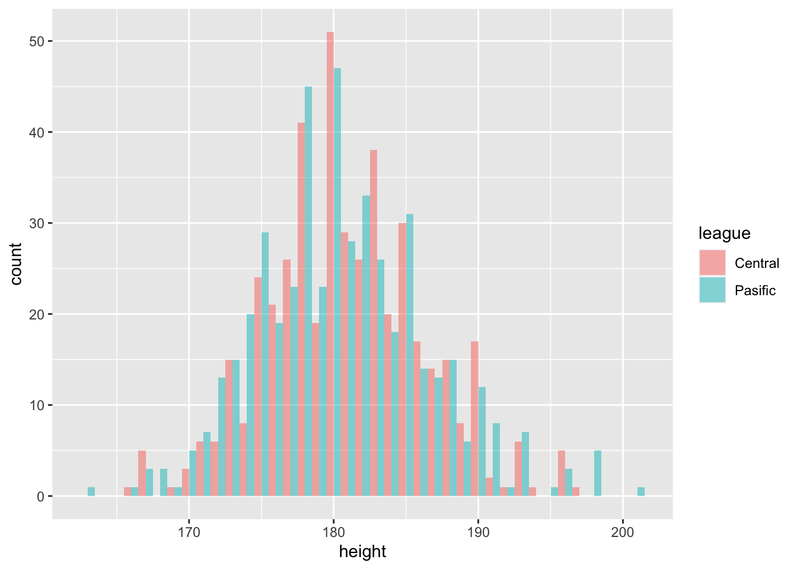
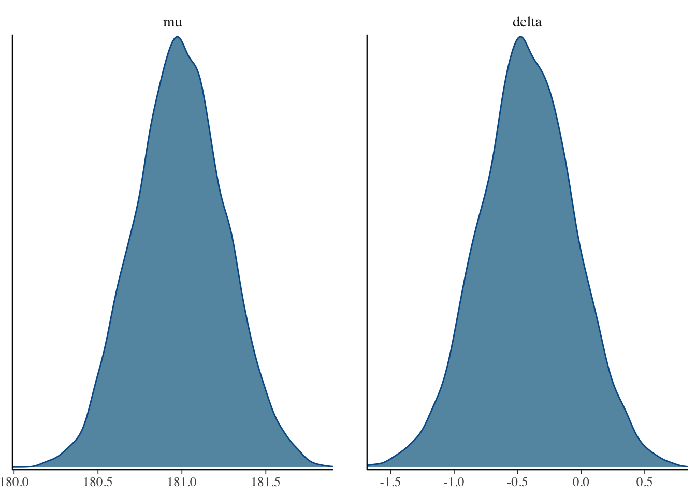

サンプルデータセットを使います。こちらからダウンロードし，プロジェクトフォルダに保存してください。 次のパッケージやコードを使って読み込みます。
library(tidyverse)## ─ Attaching packages ──────────────────── tidyverse 1.3.0 ─## ✓ tibble 3.0.6 ✓ dplyr 1.0.4
## ✓ tidyr 1.1.2 ✓ stringr 1.4.0
## ✓ readr 1.4.0 ✓ forcats 0.5.1
## ✓ purrr 0.3.4## ─ Conflicts ───────────────────── tidyverse_conflicts() ─
## x tidyr::extract() masks rstan::extract()
## x dplyr::filter() masks stats::filter()
## x dplyr::lag() masks stats::lag()dat <- read_csv("baseball2020.csv") %>%
## データを処理しやすくするために，少し加工します。
# 文字列を要因型に変形
dplyr::mutate_if(is.character, as.factor) %>%
# セリーグとパリーグを作る
dplyr::mutate(league = if_else(team %in% c("Giants", "Tigers", "Carp", "Dragons", "Swallows", "DeNA"), 1, 2) %>%
factor(., labels = c("Central", "Pasific")))##
## ─ Column specification ────────────────────────────
## cols(
## .default = col_double(),
## Name = col_character(),
## team = col_character(),
## position = col_character(),
## bloodType = col_character(),
## throw.by = col_character(),
## batting.by = col_character(),
## birth.place = col_character(),
## birth.day = col_date(format = ""),
## 背番号 = col_character()
## )
## ℹ Use `spec()` for the full column specifications.summary(dat)## Name team salary position
## ロドリゲス: 3 Giants : 91 Min. : 230 \u5916\u91ce\u624b:158
## エスコバー: 2 Softbank: 89 1st Qu.: 630 \u6295\u624b :483
## スアレス : 2 Eagles : 85 Median : 1400 \u5185\u91ce\u624b:197
## デラロサ : 2 Orix : 81 Mean : 4329 \u6355\u624b : 96
## メヒア : 2 Lotte : 78 3rd Qu.: 4200
## ロメロ : 2 Dragons : 76 Max. :65000
## (Other) :921 (Other) :434
## years height weight bloodType
## Min. : 1.000 Min. :163.0 Min. : 64.00 AB\u578b : 87
## 1st Qu.: 2.000 1st Qu.:177.0 1st Qu.: 79.00 A\u578b :316
## Median : 4.000 Median :180.0 Median : 84.00 B\u578b :186
## Mean : 5.564 Mean :180.8 Mean : 84.68 O\u578b :255
## 3rd Qu.: 8.000 3rd Qu.:184.8 3rd Qu.: 90.00 \u4e0d\u660e: 90
## Max. :20.000 Max. :201.0 Max. :122.00
##
## throw.by batting.by birth.place birth.day
## \u53f3:773 \u53f3:524 \u5927\u962a : 81 Min. :1977-04-26
## \u5de6:161 \u5de6:395 \u798f\u5ca1 : 48 1st Qu.:1990-10-23
## \u4e21: 15 \u6771\u4eac : 47 Median :1994-05-14
## \u5175\u5eab : 47 Mean :1993-12-29
## \u795e\u5948\u5ddd: 46 3rd Qu.:1997-09-25
## \u5343\u8449 : 43 Max. :2002-03-09
## (Other) :622
## \u80cc\u756a\u53f7 \u6253\u7387 \u8a66\u5408
## 58 : 13 Min. :0.0000 Min. : 1.00
## 0 : 12 1st Qu.:0.1710 1st Qu.: 9.00
## 17 : 12 Median :0.2280 Median : 22.00
## 19 : 12 Mean :0.2117 Mean : 35.59
## 2 : 12 3rd Qu.:0.2670 3rd Qu.: 52.00
## (Other):763 Max. :0.5000 Max. :120.00
## NA's :110 NA's :605 NA's :269
## \u6253\u5e2d\u6570 \u6253\u6570 \u5b89\u6253
## Min. : 0.0 Min. : 0.0 Min. : 0.00
## 1st Qu.: 22.0 1st Qu.: 19.0 1st Qu.: 4.00
## Median : 92.0 Median : 80.0 Median : 17.00
## Mean :160.2 Mean :140.7 Mean : 35.72
## 3rd Qu.:275.0 3rd Qu.:238.0 3rd Qu.: 61.00
## Max. :546.0 Max. :478.0 Max. :146.00
## NA's :605 NA's :605 NA's :605
## \u672c\u5841\u6253 \u6253\u70b9 \u76d7\u5841 \u56db\u7403
## Min. : 0.000 Min. : 0.00 Min. : 0.00 Min. : 0.00
## 1st Qu.: 0.000 1st Qu.: 1.00 1st Qu.: 0.00 1st Qu.: 1.00
## Median : 1.000 Median : 7.00 Median : 0.00 Median : 6.00
## Mean : 3.909 Mean : 17.03 Mean : 2.66 Mean :14.83
## 3rd Qu.: 5.000 3rd Qu.: 24.00 3rd Qu.: 3.00 3rd Qu.:22.00
## Max. :32.000 Max. :108.00 Max. :50.00 Max. :92.00
## NA's :605 NA's :605 NA's :605 NA's :605
## \u6b7b\u7403 \u4e09\u632f \u72a0\u6253 \u4f75\u6bba\u6253
## Min. : 0.000 Min. : 0.00 Min. : 0.000 Min. : 0.000
## 1st Qu.: 0.000 1st Qu.: 6.00 1st Qu.: 0.000 1st Qu.: 0.000
## Median : 1.000 Median : 21.00 Median : 1.000 Median : 2.000
## Mean : 1.462 Mean : 30.99 Mean : 2.271 Mean : 3.033
## 3rd Qu.: 2.000 3rd Qu.: 50.00 3rd Qu.: 3.000 3rd Qu.: 5.000
## Max. :17.000 Max. :150.00 Max. :22.000 Max. :21.000
## NA's :605 NA's :605 NA's :605 NA's :605
## \u51fa\u5841\u7387 \u9577\u6253\u7387 OPS RC27
## Min. :0.0000 Min. :0.0000 Min. :0.0000 Min. :-4.00
## 1st Qu.:0.2380 1st Qu.:0.2300 1st Qu.:0.4700 1st Qu.: 1.41
## Median :0.2970 Median :0.3300 Median :0.6290 Median : 3.09
## Mean :0.2748 Mean :0.3128 Mean :0.5876 Mean : 3.07
## 3rd Qu.:0.3400 3rd Qu.:0.4020 3rd Qu.:0.7480 3rd Qu.: 4.73
## Max. :0.5000 Max. :1.0000 Max. :1.4000 Max. :17.04
## NA's :605 NA's :605 NA's :605 NA's :605
## XR27 \u9632\u5fa1\u7387 \u52dd\u5229 \u6557\u5317
## Min. :-4.000 Min. : 0.000 Min. : 0.000 Min. :0.000
## 1st Qu.: 1.530 1st Qu.: 2.870 1st Qu.: 0.000 1st Qu.:0.000
## Median : 3.210 Median : 4.120 Median : 1.000 Median :1.000
## Mean : 3.122 Mean : 5.151 Mean : 2.021 Mean :2.021
## 3rd Qu.: 4.720 3rd Qu.: 5.875 3rd Qu.: 3.000 3rd Qu.:3.000
## Max. :16.470 Max. :27.000 Max. :14.000 Max. :9.000
## NA's :605 NA's :599 NA's :598 NA's :598
## セーブ ホールド \u52dd\u7387 \u6253\u8005
## Min. : 0.0000 Min. : 0.000 Min. :0.0000 Min. : 1.0
## 1st Qu.: 0.0000 1st Qu.: 0.000 1st Qu.:0.0000 1st Qu.: 49.0
## Median : 0.0000 Median : 0.000 Median :0.3330 Median :121.5
## Mean : 0.9792 Mean : 3.196 Mean :0.3345 Mean :160.7
## 3rd Qu.: 0.0000 3rd Qu.: 4.000 3rd Qu.:0.5478 3rd Qu.:217.0
## Max. :33.0000 Max. :38.000 Max. :1.0000 Max. :582.0
## NA's :598 NA's :598 NA's :598 NA's :598
## \u6295\u7403\u56de \u88ab\u5b89\u6253 \u88ab\u672c\u5841\u6253
## Min. : 0.00 Min. : 0.00 Min. : 0.00
## 1st Qu.: 11.00 1st Qu.: 12.00 1st Qu.: 1.00
## Median : 28.60 Median : 26.50 Median : 3.00
## Mean : 37.44 Mean : 35.26 Mean : 3.83
## 3rd Qu.: 51.02 3rd Qu.: 48.00 3rd Qu.: 6.00
## Max. :148.20 Max. :138.00 Max. :20.00
## NA's :598 NA's :598 NA's :598
## \u4e0e\u56db\u7403 \u4e0e\u6b7b\u7403 \u596a\u4e09\u632f
## Min. : 0.00 Min. : 0.000 Min. : 0.00
## 1st Qu.: 5.00 1st Qu.: 0.000 1st Qu.: 9.00
## Median :13.00 Median : 1.000 Median : 24.00
## Mean :14.58 Mean : 1.426 Mean : 32.05
## 3rd Qu.:20.00 3rd Qu.: 2.000 3rd Qu.: 46.00
## Max. :57.00 Max. :12.000 Max. :149.00
## NA's :598 NA's :598 NA's :598
## \u5931\u70b9 \u81ea\u8cac\u70b9 WHIP DIPS
## Min. : 0.00 Min. : 0.00 Min. :0.000 Min. :-2.880
## 1st Qu.: 6.00 1st Qu.: 6.00 1st Qu.:1.230 1st Qu.: 3.395
## Median :14.00 Median :12.50 Median :1.410 Median : 4.120
## Mean :17.57 Mean :16.09 Mean :1.569 Mean : 4.478
## 3rd Qu.:24.00 3rd Qu.:22.00 3rd Qu.:1.690 3rd Qu.: 5.075
## Max. :68.00 Max. :65.00 Max. :5.000 Max. :21.980
## NA's :598 NA's :598 NA's :599 NA's :599
## league
## Central:457
## Pasific:477
##
##
##
##
## 身長のデータを使って，セリーグとパリーグの選手の身長に差があるかどうか検定します。
# データの一部を抜き出す
dat1 <- dat %>% select(league, height)
# 可視化する
dat1 %>%
ggplot(mapping = aes(x = height, fill = league)) +
geom_histogram(position = "dodge", binwidth = 1, alpha = 0.5)
# 検定
t.test(height ~ league, data = dat1, var.equal = T)##
## Two Sample t-test
##
## data: height by league
## t = 1.1268, df = 932, p-value = 0.2601
## alternative hypothesis: true difference in means is not equal to 0
## 95 percent confidence interval:
## -0.312184 1.154034
## sample estimates:
## mean in group Central mean in group Pasific
## 180.9891 180.5681## 分散が異なると仮定する
t.test(height ~ league, data = dat1, var.equal = F)##
## Welch Two Sample t-test
##
## data: height by league
## t = 1.1288, df = 930.4, p-value = 0.2593
## alternative hypothesis: true difference in means is not equal to 0
## 95 percent confidence interval:
## -0.3108642 1.1527141
## sample estimates:
## mean in group Central mean in group Pasific
## 180.9891 180.5681## 事後的に効果量を考える
library(effsize)
cohen.d(height ~ league, data = dat1)##
## Cohen's d
##
## d estimate: 0.07375726 (negligible)
## 95 percent confidence interval:
## lower upper
## -0.0547466 0.2022611cohen.d(height ~ league, data = dat1, hedges.correction = T)##
## Hedges's g
##
## g estimate: 0.07369789 (negligible)
## 95 percent confidence interval:
## lower upper
## -0.05470246 0.20209823## data{
## int<lower=0> N1;
## int<lower=0> N2;
## real X1[N1];
## real X2[N2];
## }
##
## parameters{
## real mu;
## real delta;
## real<lower=0> sigma;
## }
##
## model{
## //likelihood
## for(n1 in 1:N1){
## X1[n1] ~ normal(mu, sigma);
## }
## for(n2 in 1:N2){
## X2[n2] ~ normal(mu+delta, sigma);
## }
## //prior
## mu ~ normal(0,100);
## delta ~ normal(0,100);
## sigma ~ cauchy(0,5);
## }library(rstan)
options(mc.cores = parallel::detectCores())
model_plain <- stan_model("ttest_plain.stan")
Cleague <- dat1 %>%
filter(league == "Central") %>%
select(height)
Pleague <- dat1 %>%
filter(league == "Pasific") %>%
select(height)
dataSet <- list(
N1 = NROW(Cleague),
N2 = NROW(Pleague),
X1 = Cleague$height,
X2 = Pleague$height
)
## サンプリング
fit1 <- sampling(model_plain, dataSet, iter = 5000)
fit1## Inference for Stan model: ttest_plain.
## 4 chains, each with iter=5000; warmup=2500; thin=1;
## post-warmup draws per chain=2500, total post-warmup draws=10000.
##
## mean se_mean sd 2.5% 25% 50% 75% 97.5% n_eff
## mu 180.99 0.00 0.27 180.47 180.81 180.99 181.17 181.52 5176
## delta -0.43 0.01 0.37 -1.16 -0.67 -0.43 -0.17 0.32 5248
## sigma 5.71 0.00 0.13 5.46 5.62 5.71 5.80 5.98 6788
## lp__ -2094.98 0.02 1.22 -2098.07 -2095.55 -2094.67 -2094.08 -2093.57 4555
## Rhat
## mu 1
## delta 1
## sigma 1
## lp__ 1
##
## Samples were drawn using NUTS(diag_e) at Sat Feb 20 11:38:16 2021.
## For each parameter, n_eff is a crude measure of effective sample size,
## and Rhat is the potential scale reduction factor on split chains (at
## convergence, Rhat=1).library(bayesplot)
library(bayestestR)
bayesplot::mcmc_dens(fit1, pars = c("mu", "delta"))
bayestestR::map_estimate(fit1)| Parameter | MAP_Estimate |
|---|---|
| mu | 180.9724020 |
| delta | -0.4765203 |
bayestestR::hdi(fit1, ci = 0.5)| Parameter | CI | CI_low | CI_high | Effects | Component | |
|---|---|---|---|---|---|---|
| 2 | mu | 0.5 | 180.7998473 | 181.162791 | fixed | conditional |
| 1 | delta | 0.5 | -0.6474325 | -0.150322 | fixed | conditional |
## data{
## int<lower=0> N1;
## int<lower=0> N2;
## real X1[N1];
## real X2[N2];
## }
##
## parameters{
## real mu;
## real<lower=0> sigma;
## }
##
## model{
## //likelihood
## for(n1 in 1:N1){
## target += normal_lpdf(X1[n1]|mu, sigma);
## }
## for(n2 in 1:N2){
## target += normal_lpdf(X2[n2]|mu, sigma);
## }
## //prior
## target += normal_lpdf(mu|0,100);
## target += cauchy_lpdf(sigma|0,5) - cauchy_lccdf(0|0,5);;
## }## data{
## int<lower=0> N1;
## int<lower=0> N2;
## real X1[N1];
## real X2[N2];
## }
##
## parameters{
## real mu1;
## real mu2;
## real<lower=0> sigma;
## }
##
## model{
## //likelihood
## for(n1 in 1:N1){
## target += normal_lpdf(X1[n1]|mu1, sigma);
## }
## for(n2 in 1:N2){
## target += normal_lpdf(X2[n2]|mu2, sigma);
## }
## //prior
## target += normal_lpdf(mu1|0,100);
## target += normal_lpdf(mu2|0,100);
## target += cauchy_lpdf(sigma|0,5) - cauchy_lccdf(0|0,5);;
## }## サンプリング
model_bf1 <- stan_model("ttest_BF1.stan")
model_bf2 <- stan_model("ttest_BF2.stan")
fit.bf1 <- sampling(model_bf1, dataSet, iter = 5000)
fit.bf2 <- sampling(model_bf2, dataSet, iter = 5000)
library(bridgesampling)
H0 <- bridge_sampler(fit.bf1, method = "normal", silent = TRUE)
H1 <- bridge_sampler(fit.bf2, method = "normal", silent = TRUE)
bridgesampling::bf(H1, H0)## Estimated Bayes factor in favor of H1 over H0: 0.00138set.seed(12345)
N <- 100
mu <- 5
sigma <- 1
delta <- 0.5
alpha <- delta * sigma
muX <- mu + alpha / 2
muY <- mu - alpha / 2
X1 <- rnorm(N, muX, sigma)
X2 <- rnorm(N, muY, sigma)
t.test(X1, X2)##
## Welch Two Sample t-test
##
## data: X1 and X2
## t = 4.6507, df = 196.15, p-value = 6.071e-06
## alternative hypothesis: true difference in means is not equal to 0
## 95 percent confidence interval:
## 0.4031446 0.9967835
## sample estimates:
## mean of x mean of y
## 5.495197 4.795233cohen.d(X1, X2, hedges.correction = T)##
## Hedges's g
##
## g estimate: 0.6552154 (medium)
## 95 percent confidence interval:
## lower upper
## 0.3700306 0.9404002## data{
## int<lower=0> N1;
## int<lower=0> N2;
## real X1[N1];
## real X2[N2];
## }
##
## parameters{
## real mu;
## real delta;
## real<lower=0> sigma;
## }
##
## model{
## //likelihood
## for(n1 in 1:N1){
## X1[n1] ~ normal(mu, sigma);
## }
## for(n2 in 1:N2){
## X2[n2] ~ normal(mu+delta, sigma);
## }
## //prior
## mu ~ normal(0,100);
## delta ~ normal(0,100);
## sigma ~ cauchy(0,5);
## }
##
## generated quantities{
## real predX1;
## real predX2;
## real FLG;
## predX1 = normal_rng(mu,sigma);
## predX2 = normal_rng(mu+delta,sigma);
## if(predX1 > predX2){
## FLG = 1;
## }else{
## FLG=0;
## }
## }model_GQ <- stan_model("ttest_GQ.stan")
dataSet <- list(
N1 = N,
N2 = N,
X1 = X1,
X2 = X2
)
fit.GQ <- sampling(model_GQ, dataSet)
## サンプルの一部を取り出す
samples <- rstan::extract(fit.GQ) %>% as.tibble()## Warning: `as.tibble()` was deprecated in tibble 2.0.0.
## Please use `as_tibble()` instead.
## The signature and semantics have changed, see `?as_tibble`.summary(samples)## mu delta sigma predX1
## Min. :5.131 Min. :-1.1647 Min. :0.9054 Min. :0.5228
## 1st Qu.:5.422 1st Qu.:-0.8054 1st Qu.:1.0331 1st Qu.:4.7711
## Median :5.494 Median :-0.6996 Median :1.0714 Median :5.5001
## Mean :5.494 Mean :-0.6987 Mean :1.0719 Mean :5.4919
## 3rd Qu.:5.567 3rd Qu.:-0.5947 3rd Qu.:1.1088 3rd Qu.:6.2257
## Max. :5.876 Max. :-0.2038 Max. :1.2774 Max. :9.8842
## predX2 FLG lp__
## Min. :1.025 Min. :0.0000 Min. :-121.5
## 1st Qu.:4.114 1st Qu.:0.0000 1st Qu.:-113.5
## Median :4.830 Median :1.0000 Median :-112.7
## Mean :4.833 Mean :0.6653 Mean :-113.0
## 3rd Qu.:5.551 3rd Qu.:1.0000 3rd Qu.:-112.1
## Max. :8.734 Max. :1.0000 Max. :-111.4